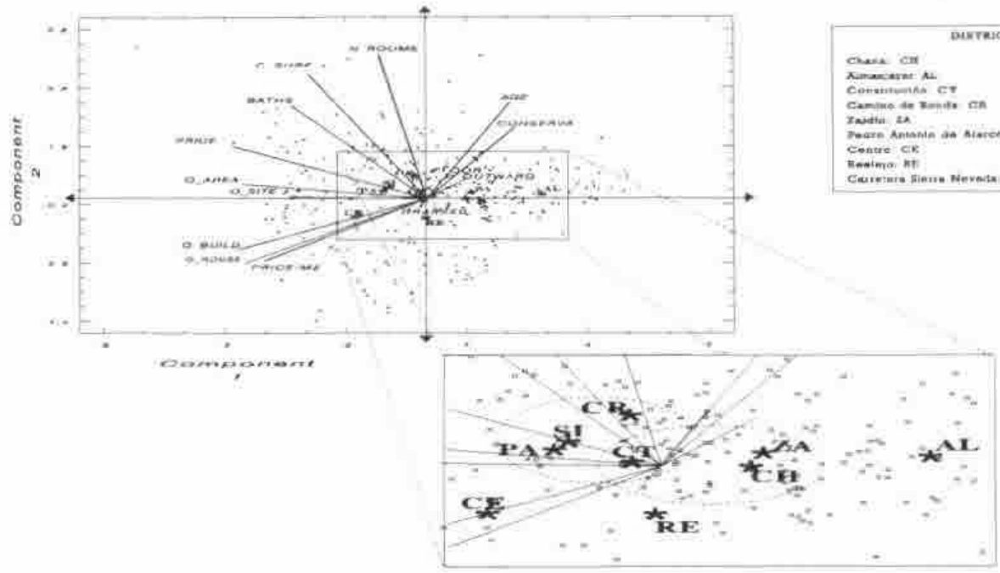

Use of Multivariate Techniques for the Grouping Together of Districts. Application in the City of Granada
Vector 14:2, page 112
Transcribed from the printed issue; not yet reviewed. Read it in the PDF of the issue, page 112
Paper given at "APL in Business", Swansea 18–22 July 1994
Abstract¹¶
Housing, as an urban property, shares a great number of characteristics of an extremely varied nature. The handling and interpretation of such a quantity of variables makes their synthesized representation necessary. Analysis in Principal Components (APC) is a statistical tool which greatly helps to carry out this task.
In this paper, the main results obtained after analyzing the housing supply in the city of Granada (Spain) are presented, from the point of view of APC. Multivariate statistical contrasts are applied with the aim of confirming the similarity between districts in the city.
1. Aims of the Study¶
The study has been carried out using a questionnaire from the Department of Real Estate Appraisals of the Andalucia Regional Government. The size of the sample is 299 houses (apartments) up for sale, on which data has been obtained with regard to fourteen variables, see Table 1.
The aims of the study are:
a) To determine which of the fourteen variables best shows up the differences among this group of these houses.
b) To reduce the fourteen variables down to a smaller group, linear combinations of the original ones.
c) To determine which districts present similarities and radical differences with regard to the set of variables under consideration.
Variables
- Floor.
- Conservation: high values imply a bad state of repair.
- Bathrooms
- Constructed surface area of the apartment (in m²).
- Price: that presented on the market by the seller.
- Quality of the area.
- Quality of the site.
- Quality of the building.
- Quality of the house.
In variables 6, 7, 8 and 9, high values imply high quality.
- Age.
- Number of rooms.
- Outward facing rate of rooms.
- Price per square metre.
- Grassed areas: from 1 to 3 points are given if there is a swimming pool, sports areas or garden areas; no points are given if this is not the case.
Table 1
2. Results of the Analysis in Principal Components¶
2.1. Interpretation of the factors¶
In Table 2, the factors² are presented, classified in decreasing order of variability. In the first part of the study we shall concentrate mainly on the two first factors, since they include simultaneously 51.95% of the total variability of the sample.
The correlations of each of the variables with the first two factors can be seen graphically in Figure 1. By analyzing Figure 1, the significance of the first two factors can be interpreted, keeping in mind the proximity of each of the variables to the factors.
| Components or factors | Variance percentage | Accumulated percentage |
|---|---|---|
| 1 | 34.409 | 34.409 |
| 2 | 17.534 | 51.944 |
| 3 | 10.230 | 62.174 |
| 4 | 7.477 | 69.652 |
| 5 | 6.631 | 76.283 |
| 6 | 6.274 | 82.558 |
| 7 | 4.211 | 86.770 |
| 8 | 3.607 | 90.377 |
| 9 | 2.838 | 93.215 |
| 10 | 2.283 | 95.499 |
| 11 | 2.061 | 97.560 |
| 12 | 1.529 | 99.089 |
| 13 | 0.746 | 99.836 |
| 14 | 0.163 | 100.000 |
Table 2
First factor (F1):
The characteristics which are most correlated to F1 are: price (-0.87), quality of the building (-0.85), quality of the house (-0.83f), quality of the area (-0.83) and price per square metre (-0.73).
The price variable is the most related to the most discriminating component, which is coherent with the fact that it is a variable which shows a high variation coefficient in the initial data.
If we observe the positioning of the points-variables on the first axis (Figure 1), we can see that the variables with a greater weighting, apart from price, refer to the quality of the construction and the area. The quality of site and the number of bathrooms³ are found to have a slightly lower influence. Consequently, we can interpret this factor as the "overall quality of the house".
Second factor (F2):
The characteristics which are most correlated to this factor are: number of rooms (0.83), constructed surface area (0.71) and, to a lesser extent, the number of bathrooms. Therefore, the second factor is interpreted as "size of the house".

Figure 1.
2.2. Interpretation of the variables correlation plot¶
The observation of Figure 1 shows the existence of three groups of variables:
A. A first group of characteristics very close to each other and, therefore, highly correlated among themselves: quality of the construction (of the building and of the house) and environmental quality (of the area and of the site). The houses for sale in the sample reflect that construction is carried out with good qualities in urbanistically good areas, and that it is difficult to find high building quality in low environmental quality areas. Furthermore, a significant correlation is noticeable between price per square metre and the previous group of variables, particularly the quality of the area.
B. Another group of characteristics is located in the second quadrant: number of rooms, constructed surface area and bathrooms. The relatively significant correlation between quality of the area and bathrooms should be pointed out here.
C. The third group of variables is found in the first quadrant: age (high) and conservation (bad), which move in the opposite direction to the qualities of construction.
2.3. Interpretation of the individuals scatterplot¶
In order to complete the APC, we project a set of supplementary individuals: the centres of gravity of each quarter. This centre of gravity represents the average type of house in the district.
A grading of lower to higher quality (right to left) can be seen in Figure 1 for the houses in each quarter: From the Almanjáyar district (AL), which is the most run-down sector of the city, to the Centre area (CE), where the highest environmental and construction qualities are found.
The position of the points with regard to F2 should be studied carefully, since the quality of representation on this axis is only relatively good in the districts of Camino de Ronda (with houses of a greater size) and Realejo (smaller houses).
3. Grouping Together of Districts¶
We shall now try to point out the possible differences and similarities of houses among the different districts of the city.
In order to confirm or reject the groupings which can be made in sight of Figure 1, various statistic contrasts of a multivariate nature⁴ have been achieved.
There are various reasons to justify the use of the principal components instead of the original variables when carrying out the contrasts: one of them lies in the advantage that the contrast can gradually become richer with a greater quantity of information, which is ensured with the gradual introduction of the principal components; on the other hand, making use of some from the original variables would be more arbitrary. Another advantage in using the principal components is that the greater part of the information from the original variables is included in just a few of the principal components.
The T²-Hotelling test has been used with the aim of comparing pairs of districts with respect to various principal components.
The test used to compare three or more districts with respect to various components is the likelihood ratio test of the multivariate analysis of the variance which, from now on, shall be called ϕ.
3.1. Results of the multivariate contrasts¶
After applying the T²-Hotelling test with two components to all the possible district pairs, the isolation of three districts is noticeable: Almanjáyar (AL), Centre (CE) and, to a lesser extent, Realejo (RE). The explanation of the separation of Almanjáyar (AL) and Centre (CE) from the rest of the districts is clear: the first one is a suburb which, socioeconomically, is considered as run-down; the second has traditionally always been the Centre Business District (CBD).
If the first two components are taken into account (see Table 3), the existence of two large groups of districts is evident: on the one hand, the group formed by Constitución-Toros (CT), Camino de Ronda (CR), Pedro Antonio de Alarcón (PA) and Camino de la Sierra (SI); on the other hand, the group which includes Constitución-Toros (CT), Chana (CH) and Zaidín (ZA) (see Figure 1). The first group of districts can be characterised from a socioeconomic point of view as being middle or upper-middle class, whilst the second group is middle and working class.
If a greater quantity of information is added through the third component, the homogeneity of the first group is lost, whilst the second group remains together (see Table 4). This second group (CT, CH and ZA) is lost when the fourth component is added (see Table 5). After introducing the four components, only the pair formed by Zaidín (ZA) and Chana (CH) is maintained. This grouping shows a strong homogeneity since it is maintained when the first six components are introduced, which include more than 80% of the quantity of information in the sample.
| Districts | ϕ exp. | G.L. | ϕ theor. | Group? |
|---|---|---|---|---|
| CH, CT, ZA | 7.836 | 4 | 9.488 | YES |
| CT, CR, SI | 6.914 | 4 | 9.488 | YES |
| CT, PA, SI | 3.335 | 4 | 9.488 | YES |
| CT, CR, PA, SI | 8.452 | 6 | 12.602 | YES |
| CH, CT, ZA, RE | 24.528 | 6 | 12.602 | NO |
| CR, PA, SI | 5.930 | 4 | 9.488 | YES |
| CT, CR, PA, RE, SI | 23.985 | 8 | 15.514 | NO |
| CT, CR, PA, SI, RE, CH, ZA | 51.581 | 12 | 21.029 | NO |
| CT, CR, PA, SI, CH, ZA | 32.170 | 10 | 18.313 | NO |
Table 3. Groups of homogeneous districts in relation with two components.
| Districts | ϕ exp. | G.L. | ϕ theor. | Group? |
|---|---|---|---|---|
| CH, CT, ZA | 9.978 | 6 | 12.602 | YES |
| CT, CR, PA, SI | 40.148 | 9 | 16.925 | NO |
Table 4. Groups of homogeneous districts in relation with three components.
Given that the inexistence of significant differences has been accepted with regard to the average behaviour of the Zaidín and Chana districts, the possibility of significant differences between both districts is studied with respect to the dispersal of their data.
The majority of texts about multivariate methods suggest the use of the Bartlett test to compare the variation in two multivariate samples.
| Districts | ϕ ó T² exp. | G.L. | ϕ ó T² theor. | Group? |
|---|---|---|---|---|
| CH, CT, ZA | 15.635 | 8 | 15.514 | NO |
| CH, ZA | 1.337 | 4, 36 | 2.633 | YES |
| CT, CR, PA, SI | 41.326 | 12 | 21.029 | NO |
| CT, PA, SI | 26.898 | 8 | 15.510 | NO |
| CR, PA, SI | 36.044 | 8 | 15.510 | NO |
| PA, SI | 6.347 | 4, 77 | 2.490 | NO |
Table 5. Groups of homogeneous districts in relation with four components.
This test is very sensitive with respect to the hypothesis of multivariate normality (Srivastava and Carter, 1983, p. 333). A more robust alternative process is the Levene test (Levene, 1960), which transforms the original_data_in_to absolute deviations from sample mean or median (using this last one gives even greater robustness). Another possibility is the Van Valen test (Van Valen, 1978), which calculates:
dij = √( Σk=1p (xijk − x̄jk)² )
where xijk is the value of the variable Xk for the ith individual in sample j and x̄jk is the mean of the same variable in the sample (the median can also be used, a more robust test being obtained). The test is based on the assumption that in one of the two districts compared there is more variability over all the components.
The Van Valen test, as opposed to the Levene test, has the advantage of being directional, in the sense that it emphasises a greater variation comparing one district with another when this variation points in the same direction for all the variables.
After applying the Levene test to the first six components in Zaidín and Chana, no significant differences are observed with regard to variability (see Table 6).
| Exp. value | G.L. | Theor. value | Group? | |
|---|---|---|---|---|
| Levene 6 components | 0.341 | 6, 34 | 2.380 | YES |
| Van Valen 6 components | -1.270 | 39 | -1.685 | YES |
Table 6. Results of the contrasts of Levene and Van Valen
Given that the differences with respect to dispersal in the samples of Zaidín and Chana, although small, point in the same direction, it could be thought that the Van Valen test would help us to detect a greater overall variability in the Zaidín data as opposed to those of Chana. After carrying out the test over the first six components, no significant differences are found either with reference to dispersal that would support said intuition (see Table 6). Therefore, the existence of a great homogeneity is noted among the houses for sale in these two districts, in both terms of average behaviour and variability. The previous analyses confirm the similarity between these two districts which, although geographically distant the one from the other, occupy symmetrical positions with regard to the city map and present common socioeconomic and urbanistic profiles.
4. Bibliography¶
Cano Guervós, R.A., Chica Olmo, J.M., Hermoso Gutiérrez, J.A. (1993). Categorización de las Características de la Vivienda en Venta en la Ciudad de Granada. Estudios de Economía Aplicada, vol. I. VII Reunión de ASEPELT-España. Servicio de Publicaciones de la Universidad de Cádiz.
Levene, H. (1960). Robust tests for equality of variance. Contributions to Probability and Statistics. Stanford University Press, California.
Manly, B. (1986). Multivariate Statistical Methods. A Primer. Chapman and Hall, New York.
Saporta, G.(1990). Probabilités Analyse des Données et Statistique. Editions Technip. París.
Srivastava, M.S., Carter, E.M. (1983). An Introduction to Applied Multivariate Statistics. North Holland, New York.
Van Valen, L. (1978). The Statistics of Variation. Evolutionary Theory, vol. 4.
Ball, J.M. (1973). "Recent Empirical Work on the Determinants of Relative House Prices". Urban Studies.
Dericke, P.H. (1983). Economía y Planificación Urbana. IEAL. Madrid.
Lebart, L., Morineau, A., Fenelon, J.P. (1985). Tratamiento Estadístico de Datos. Marcombo. Barcelona.
¹ Financed by project PB91-0952 (DGICYT).
² Each factor is an artificial and latent variable which is obtained as a linear combination of the fourteen variables under consideration (SAPORTA, 1990).
³ The number of bathrooms can be generally considered as indicative of the quality of the house.
⁴ A brief explanation of these contrasts can be found in Bryan F.J. Manly: Multivariate Statistical Methods, Chapman and Hall Ltd., New York, 1986.